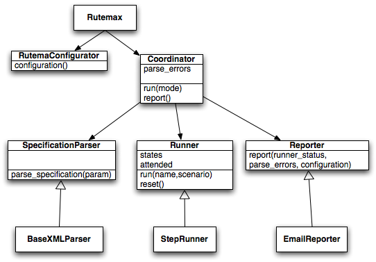

rutema
Rutemax Walkthrough
This is the droid you're looking for!
How does it all play together? What happens each time you callrutemax?
rutemax's workflow can be reduced to the following description:
- Parser transforms specification to objects.
- Runner runs scenarios.
- Reporters produce result report.
Ofcourse it is more complicated than that, once you factor in the configuration and the fact that we probably want different report formats.

rutemax reads the configuration and passes it to a coordinator/controller that then instantiates the main parts of the system:
parser, runner and reporters.

The parser produces the following classes from a specification file:

The runner status fed to the reporters is an instance of Patir::CommandSequenceStatus containing the stati of each scenario ran.